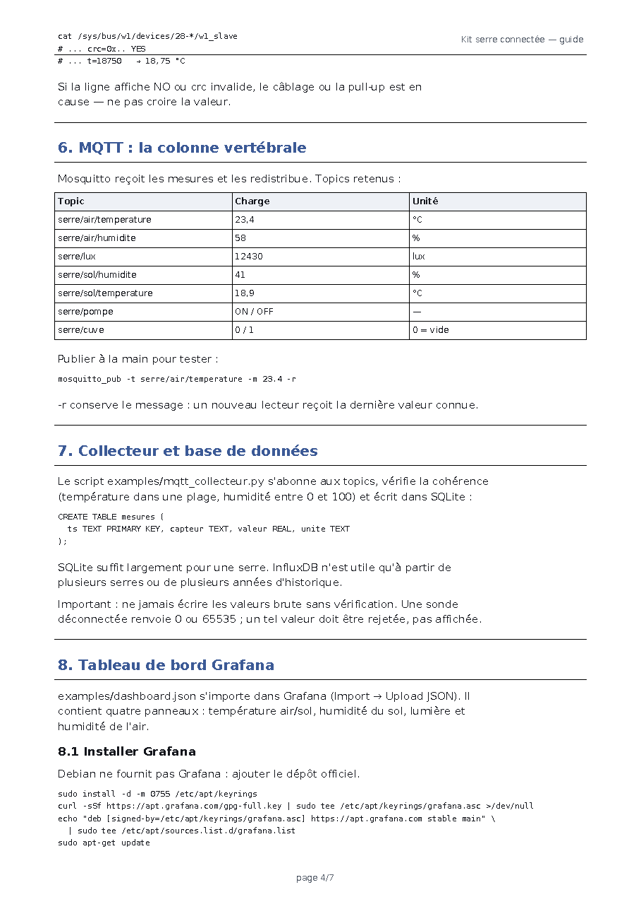
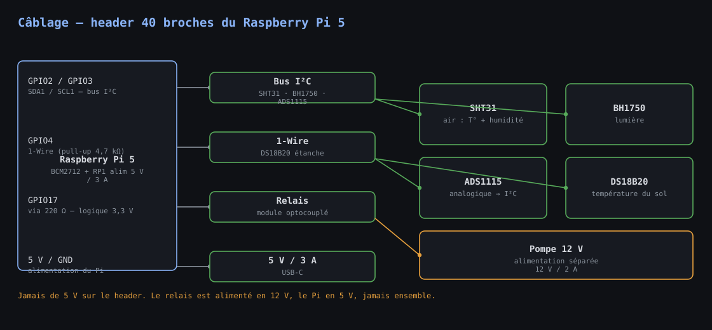

Projets
Kit serre connectée
Un guide qui part de zéro et un programme complet pour mesurer l'air, le sol et l'arrosage d'une serre — sans cloud, sans abonnement.
Prix 9 USDC

La preuve
- 18 tests — OK
- Mesures en base serre : 120
- fichiers : 2 (0 absent)
- La preuve →
Dans ce projet
Documentation — Kit serre connectée
Le contenu du kit, les prérequis et la marche à suivre.
Preuve — Kit serre connectée
Ce qui est réellement exécuté pour ce projet, recalculé à la construction de la page.
Ce que vous obtenez
Un guide PDF de 7 pages et 11 fichiers : le code Python du collecteur, le tableau de bord Grafana, la liste de pièces, l’unité systemd, et les exemples de câblage. Le guide part de zéro — il n’est pas nécessaire d’avoir déjà branché un capteur pour le suivre.
Ce qu’il fait
- mesure l’air (SHT31 : température, humidité), le sol (DS18B20, humidité) et la lumière (BH1750) ;
- publie sur MQTT, puis écrit dans SQLite après rejet des valeurs aberrantes — une sonde en erreur ne doit pas fabriquer un faux arrosage ;
- décide l’arrosage sur règle explicite, et coupe la pompe en cas de cuve vide, d’horaire interdit ou de silence du collecteur ;
- affiche un tableau de bord Grafana construit sur les données.
Ce qu’il ne fait pas
Il ne pilote pas une installation existante « clé en main » : il vous donne la méthode, le code et les réglages, et c’est vous qui branchez. Le relais est volontairement le dernier composant du guide, pas le premier.
Pourquoi la règle d’arrosage est un argument
La pompe ne démarre que si les quatre conditions sont réunies : sol sous le seuil, cuve pleine, dans la fenêtre horaire, et un délai écoulé depuis le dernier cycle. Un capteur absent ou une cuve vide bloque l’arrosage. C’est écrit, testé, et c’est le genre de détail qui évite de noyer une serre.
Aperçu du guide




Le paiement est pair-à-pair et irréversible. Le guide ne remplace pas une installation électrique : la pompe et son alimentation sont en 12 V, le Pi en 3,3 V, et jamais les deux sur la même source.
documentation — prérequis, fichiers, marche à suivre. Mentions légales — paiement, livraison, conditions.